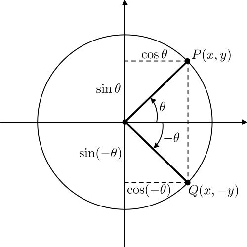
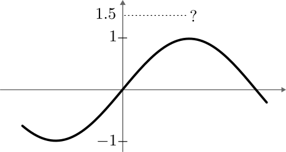
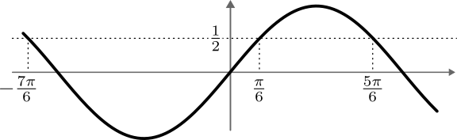
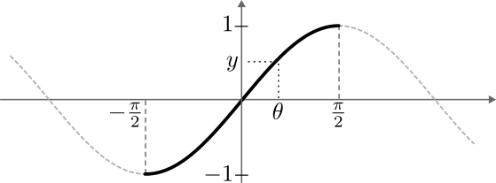
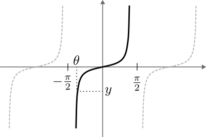
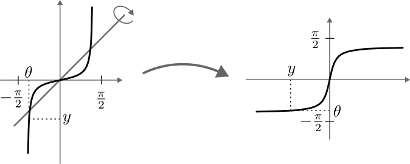

Trigonometry
Trigonometry
Introduction
The unit circle
The unit circle is the circle of radius 1 in the \(xy\)-plane, centered on the origin. It consists of all points \(P\) with coordinates \((x, y)\) such that \(x^2 + y^2 = 1\). The coordinate axes divide the unit circle into four quadrants, labelled \(I\), \(II\), \(III\), and \(IV\), in counter-clockwise sense, starting from the top right.
If we have a point \(P\) on the unit circle, with coordinates \((x, y)\), we can associate with \(P\) an angle \(\theta\), measured from the positive \(x\)-axis, in counter-clockwise direction.
We will often use Greek letters to denote angles: \(\theta\) (theta), \(\phi\), \(\varphi\) (both called phi), \(\alpha\) (alpha), \(\beta\) (beta), and so on.
There are two ways of measuring angles:
- By using degrees, where one full circle is 360°, half a circle is 180°, a quarter circle 90°, and so. This is which angles are commonly measured, in the “real world”.
- By using radians. This way is preferred by mathematicians and scientists, as it is more convenient for scientific applications. In this case, we define the value of the angle in radians to be the length of the arc subtended by the angle. Given that a full unit circle has length \(2\pi\), that means that a angle of 360° corresponds to \(2 \pi\) radians, an angle of 180° corresponds to \(\pi\) radians, and so on. In general, one can convert an angle in degrees to one in radians by multiplying by \(\frac{\pi}{180}\).
So, it looks like we established a correspondence between points on the unit circle, and angles, right? Well, not so fast. Given an angle \(\theta\) it is true that there is a unique point \(P\) with that angle. But conversely, if I have an angle \(\theta\) for a given point \(P\), I can always add or subtract a multiple of \(2\pi\) from \(\theta\) and obtain the same point. So to each point there correspond infinitely many angles, \(\theta + 2k \pi\), where \(k \in \mathbb{Z}\).
Negative angles are measured from the positive \(x\)-axis in clockwise sense.
We are now in a position where we can determine the coordinates of points, given the angle. Let’s take \(\theta = \frac{\pi}{4}\) as an example. From the figure you see that \(P\) lies on the first bisector, the line with equation \(y = x\) that divides the first quadrant neatly in two.
From the equation \(y = x\) and the defining equation for the unit circle, \(x^2 + y^2 = 1\), we find that \(2x^2 = 1\) or \(x = \pm \frac{\sqrt{2}}{2}\). We only need the positive solution, so \(x = \frac{\sqrt{2}}{2}\) and this is also the value for \(y\).
By drawing similarly crafty triangles you can find the coordinates of the points corresponding to angles \(\pi/6\), \(\pi/3\), and so on (some of these calculations were done in class).
Trigonometric functions
We are now in a position to define trigonometric functions like the sine, cosine, and tangent function. To do this, we go back to the unit circle, we take an angle \(\theta\) and we let \(P(x, y)\) be the corresponding point.
We define the cosine of \(\theta\) to be the \(x\)-coordinate of \(P\), and the sine of \(\theta\) to tbe the \(y\)-coordinate: \[ \cos \theta = x, \quad \sin \theta = y \] The tangent of \(\theta\) is the ratio of the sine to the cosine: \[ \tan \theta = \frac{\sin\theta}{\cos \theta}. \]
Besides these three functions, there are three more trigometric functions: the secant, the cosecant, and cotangent, given \[ \sec \theta = \frac{1}{\cos\theta}, \quad \csc \theta = \frac{1}{\sin\theta}, \quad \text{and} \quad \cot \theta = \frac{1}{\tan\theta}. \] These functions are less often used, but they still play an important role, for example in integration of trigonometric functions. You have to know them and be able to use them in calculations, but you can rely on the fact that each of these three can be expressed as a function of \(\cos\theta\) and \(\sin \theta\).
(to-do figure of trigonometric functions)
The word “tangent” comes from the Latin for “slightly touching”, and appears in other mathematical concepts such as the tangent line. It also makes an appears in spoken language: something that is tangentially related is only slightly related or relevant.
What is the relation between “touching” and the tangent function? For this we must go back to the unit circle, where we draw the vertical line that touches the unit circle on the right-hand side. We call this line the tangent line to the unit circle at the point \((1, 0)\). We also extend the radius through the point \(P\) until it hits the tangent line we’ve just drawn. It then turns out (and you can prove this using similar triangles) that the length of the line segment between the \(x\)-axis and the radius through \(P\) is precisely \(\sin \theta / \cos \theta\). Because it arises from a tangent line, we call this ratio the tangent function.
Graphs of trigonometric functions
Fundamental identities
Given that the cosine and sine are the \(x\)- and \(y\)-coordinate of a point on the unit circle, we have that \[
\cos^2 \theta + \sin^2 \theta = 1.
\]
This is the fundamental identity of trigonometry. Many, if not all, other properties follow from this identity.
Throughout this course, we will use the notation \(\cos^k\theta\) with \(k\) a positive number to indicate a trigonometric function raised to a power. For example, \(\cos^2 \theta\) is the square of the cosine function, given by \((\cos\theta)^2\).
There is one caveat. Later on, the notation \(\cos^{-1}\theta\) will be used to indicate the inverse cosine (and similarly for other trigonometric functions), not one divided by the cosine.
By dividing the fundamental identity by \(\cos^2 \theta\), we obtain \[ \tan^2 \theta + 1 = \sec^2 \theta, \] and by dividing the fundamental identity by \(\sin^2 \theta\), we get \[ \cot^2 \theta + 1 = \csc^2 \theta. \]
Reflection across the coordinate axes
…
These identities are also referred to as the even-odd identities. This name comes from the relation with even and odd functions: a function \(f(x)\) is said to be even if it satisfies \(f(-x) = f(x)\) for all \(x\), and odd if \(f(-x) = -f(x)\) for all \(x\). From the above, we see that \(\cos \theta\) is an even function, while \(\sin \theta\) is an odd function.

Shift formulas
Addition-subtraction formulas
Double-angle and half-angle formulas
If we consider the addition formulas and put \(\alpha\) and \(\beta\) both equal to the same angle \(\theta\), we obtain the following double-angle formulas: \[\begin{align*} \sin 2 \theta & = 2 \sin \theta \cos \theta \\ \cos 2 \theta & = \cos^2 \theta - \sin^2 \theta \\ \tan 2 \theta & = \frac{2 \tan \theta}{1 - \tan^2 \theta}. \end{align*}\]
The formula for \(\cos 2\theta\) deserves a closer look. By using the fundamental identity to write \(\cos^2 \theta = 1 - \sin^2 \theta\) or \(\sin^2 \theta = 1 - \cos^2 \theta\), we obtain two more expressions for \(\cos 2 \theta\): \[\begin{align*} \cos 2 \theta & = \cos^2 \theta - \sin^2 \theta \\ & = 1 - 2 \sin^2 \theta \\ & = 2 \cos^2 \theta - 1. \end{align*}\] Depending on the circumstances, one or the other of these formulas may be more convenient.
Now, let’s consider the second double-angle formula for \(\cos 2\theta\), and put \(\varphi = 2 \theta\), so that we get \[ \cos \varphi = 1 - 2 \sin^2 \frac{\varphi}{2}. \] By re-arranging the terms in this formula, we obtain \[ \sin^2 \frac{\varphi}{2} = \frac{1 - \cos\varphi}{2}. \] This is the half-angle formula for the sine. By a similar procedure, but starting from the third double-angle formula for the cosine, we get \[ \cos^2 \frac{\varphi}{2} = \frac{1 + \cos\varphi}{2}, \] the half-angle formula for the cosine.
The half-angle formulas are useful to eliminate powers of trigonometric functions, something that will be useful when we compute integrals of trigonometric functions. For example, \[\begin{align*} \cos^4 \theta & = \cos^2 \theta \cos^2\theta = \left(\frac{1 + \cos 2\theta}{2} \right)^2 \\ & = \frac{1}{4} \left(1 + 2 \cos 2\theta + \cos^2(2\theta) \right) \\ & = \frac{1}{4} \left(\frac{3}{2} + 2 \cos 2\theta + \frac{1}{2} \cos 4\theta \right). \\ \end{align*}\] At the end of this course we will see that it is relatively straightforward to compute the integral of the right-hand side.
Product-to-sum and sum-to-product formulas
Trigonometry and triangle geometry
The trigonometric functions are important for a number of reasons, one being that they express the ratio of the lengths of the sides in a right-angled triangle. This lets us solve problems of the following kind: if I see the top of a tower under an angle of 30 degrees, and the tower is 300 meters tall, how far away am I from the base of the tower? We will see that the answer is given by \(300 \cot 30^\circ \approx 520\) meter.
Right-angled triangles
General triangles
The law of sines is useful when you know two angles and one side in a triangle, and you want to know the other sides. Or, alternatively, when you know two sides and one of the angles, and you want to find the other angles.
Area and perimeter formulas
Word problems
Trigonometric equations
Inverse trigonometric functions
The inverse sine
Your scientific calculator probably has a button labelled “asin” or “arcsin”. If you enter \(0.5\) in your calculator and press “asin” (short for “arc sine” or “inverse sine”), your calculator will return the value \(0.52359877\). This is because \(0.52359877\) is approximately \(\pi/6\), and asin gives you the angle whose sine is equal to \(0.5\). This tells us that asin is in some sense the “inverse” of the sine function: sine turns \(\pi/6\) into \(0.5\), and asin turns \(0.5\) back into \(\pi/6\).
If you continue playing with your calculator, you’ll probably notice that that interpretation breaks down in a number of places. First of all, if you compute the inverse sine of a number outside the interval \([-1, 1]\), your calculator will return an error. We can understand why this is by looking at the graph of the sine, as in the figure below. The range of the sine is entirely between -1 and 1, and there are no angles whose sine is, for example, equal to \(1.5\).

Secondly, if we take the angle \(5 \pi/6\) and compute the sine, we again get \(0.5\). But the inverse sine of \(0.5\) is \(\pi/6\), not \(5\pi/6\). To see why, let’s look at the figure below. There are many angles whose sine is \(0.5\) and the inverse sine function has to choose one amongst them. It looks like your calculator chooses the smallest such value in some sense.

These two pieces of intuition allow us to define the inverse sine rigorously. The inverse sine, denoted by \(\sin^{-1}(y)\), must return for each \(y\) in the interval \([-1, 1]\) an angle \(\theta\) such that \(\sin \theta = y\). There are many such angles \(\theta\) and so we must choose one. Our convention is that we will choose the angle \(\theta\) that is in the interval \([-\pi/2, \pi/2]\). As you can from the figure below, this interval is chosen so that for each value \(y\) in \([-1, 1]\) there is always exactly one angle \(\theta\) so that \(\sin \theta = y\).

With this definition, the inverse sine satisfies the following properties:
- \(\sin^{-1}(\sin \theta) = \theta\) for all \(\theta \in [-\pi/2, \pi/2]\).
- \(\sin(\sin^{-1}(y)) = y\) for all \(y \in [-1, 1]\).
We can also draw the graph of the inverse sine. To do so, it is sufficient to take the graph of the sine, limited to the domain \([-\pi/2, \pi/2]\), and reflect it across the first bisector. This gives us the graph in the figure below.

The inverse cosine
Just like the sine function, the cosine function is \(2\pi\)-periodic and there are many angles \(\theta\) such that \(\cos \theta = y\). To define \(\cos^{-1}(y)\) we therefore have to limit the domain of cosine so that \(\theta\) is uniquely defined. In this case, we limit the domain to \([0, \pi]\). With that choice of domain, we again have that for each \(y \in [-1, 1]\) there is a unique \(\theta \in [0, \pi]\) such that \(\cos \theta = y\), and we let \(\cos^{-1}(y) = \theta\).

The inverse cosine satisfies the following properties:
- \(\cos^{-1}(\cos \theta) = \theta\) for all \(\theta \in [0, \pi]\).
- \(\cos(\cos^{-1}(y)) = y\) for all \(y \in [-1, 1]\).
Graphing the inverse cosine can be done by taking the graph of the cosine function, restricted to the interval \([0, \pi]\), and flipping it across the first bisector. The result is shown in the figure below.

The inverse cosine and sine are very closely related. To see this, take \(\theta = \cos^{-1} y\) for some \(y\). Then \(y = \cos \theta\), which we can also write as \(y = \sin(\pi/2 - \theta)\). By taking the inverse sine of both sides we end up with \(\pi/2 - \theta = \sin^{-1} y\). If we combine this with the previous expression for \(\theta\), this tells us that \[ \cos^{-1} y = \frac{\pi}{2} - \sin^{-1} y. \]
The inverse tangent
Last, to define the inverse tangent function, we use the fact that the tangent function is an increasing function in the interval \([-\pi/2, \pi/2]\). If we limit the domain to that interval, we have that for each \(y \in \mathbb{R}\), there exists a unique \(\theta \in [-\pi/2, \pi/2]\) such that \(\tan \theta = y\), and we define \(\tan^{-1}(y) = \theta\).
Note that the domain of \(\tan^{-1}\) is the entire set of real numbers! The domains of \(\sin^{-1}\) and \(\cos^{-1}\) are in both cases the interval \([-1, 1]\).

The inverse tangent satisfies the following properties:
- \(\tan^{-1}(\tan \theta) = \theta\) for all \(\theta \in [-\pi/2, \pi/2]\).
- \(\tan(\tan^{-1}(y)) = y\) for all \(y \in \mathbb{R}\).
As before, the inverse tangent function can be graphed by taking out the part of the tangent function with domain \([-\pi/2, \pi/2]\), and flipping it across the first bisector, as in the figure below.

Working with inverse trigonometric functions
The definitions of the inverse trigonometric functions above give us a way of thinking about these functions, but they don’t give us a concrete way of computing their value specifically. In most cases, you can infer the value of the inverse trigonometric function using what you already know about the trigonometric function itself: for example, \(\sin^{-1}(\sqrt{2}/{2}) = \pi/4\), since \(\sin (\pi/4) = \sqrt{2}/{2}\). Here, it is important to keep the domain and range of the inverse trigonometric function in mind. For example, \(\sin^{-1}(\sin (7\pi/3))\) is \(\pi/3\), not \(7\pi/3\), since \(\sin^{-1}\) always returns an angle in the interval \([0, \pi]\).
Apart from direct calculations with the inverse trigonometric functions, it is also possible to simplify expressions that involve trigonometric and inverse trigonometric functions. For example, suppose we want to simplify \(y = \cos(\tan^{-1}(x))\) as much as possible. To “clean up” this expression, we’ll introduce the angle \(\alpha = \tan^{-1}(x)\). The expression to simplify then becomes \(y = \cos \alpha\), and we have (by definition) that \(\tan \alpha = x\). Now, we know that \(\cos\) and \(\tan\) are related by \[ \cos^2 \alpha = \frac{1}{1 + \tan^2 \alpha}, \] so that \[ y = \cos \alpha = \frac{\pm 1}{\sqrt{1 + \tan^2 \alpha}} = \frac{\pm 1}{\sqrt{1 + x^2}}. \] The only thing that remains is to decide whether we should use the solution with the plus or the minus sign (or both). For that, we have to go back to the definitions of the inverse trigonometric functions. By definition, \(\tan^{-1}(x) = \alpha\) will give us an angle in the interval \((-\pi/2, \pi/2)\), and taking the cosine of such an angle always gives us a positive number. So we must take the plus in the solution above: \[ y = \frac{1}{\sqrt{1 + x^2}}. \]
In general, each composition of a trigonometric function and an inverse trigonometric function (or vice versa) can be simplified to something that looks like the root of a rational function. If the trigonometric function is applied to some multiple of the inverse trigonometric function, then you may have to use some trigonometric identities before you can apply the above. For example, \[\begin{align*} \cos(2 \sin^{-1} y) & = \cos^2(\sin^{-1} y) - \sin^2(\sin^{-1} y) \\ & = \cos^2(\sin^{-1} y) - y^2 \\ & = \sqrt{1 - y^2} - y^2. \end{align*}\]